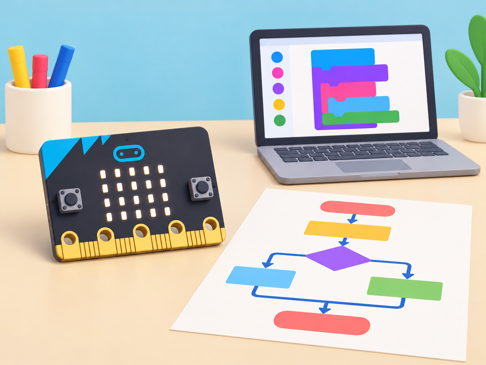

Fonaments per a pensar amb ordinadors
🏷️ Fonaments de computació
🌱 Situació, repte i intenció
🎯 Aprenentatges i vocabulari
- Descompondre una tasca, escriure instruccions inequívoces i comprovar-les amb una altra parella.
- Explicar amb un model simple com cooperen maquinari, programari, entrada, procés i eixida.
- Transformar un diagrama en blocs i distingir seqüència, repetició i selecció.
- Provar casos, depurar errors i comunicar què fa el programa i quines limitacions té.
🧰 Materials i preparació
Paper, targetes, retoladors, micro:bit, ordinador amb MakeCode i cable USB. La placa inclou botons, matriu LED, sensor de llum, temperatura aproximada, brúixola, acceleròmetre i pins; les activitats només empren els components indicats. Simulador i targetes permeten continuar sense dispositiu físic. Conceptes: algoritme, pseudocodi, diagrama de flux, seqüència, selecció, iteració, depuració, maquinari, programari i entrada/eixida.
📅 Seqüència didàctica
Cada sessió passa d’una predicció a una prova i acaba amb una evidència que es pot revisar. Les primeres activitats són desconnectades; la placa s’incorpora quan el grup ja ha explicat l’algorisme amb targetes o pseudocodi.
Pensament computacional I: instruccions que una altra classe pot seguir
Fase 1 · Activem i prediem
En equips, trieu entre dissenyar un avió de paper gegant o una construcció plegada per a taula. Acordeu objectiu, materials, espai i restriccions. Llançar l’objecte és opcional; cap equip necessita fer-ho per demostrar el que ha aprés.
Fase 2 · Explorem i construïm
Dividiu la tasca en accions petites i escriviu instruccions numerades en targetes. Separeu materials, preparació, execució i observació. Eviteu paraules ambigües com «bé», «a prop» o «una mica» si l’equip no n’ha acordat el significat.
Fase 3 · Expliquem i registrem
Intercanvieu les targetes amb un altre equip, que les seguirà literalment i sense preguntes. Registreu el primer punt on ha d’improvisar; no li doneu pistes durant l’execució. Després, compareu el resultat amb la intenció inicial.
Fase 4 · Apliquem i millorem
Canvieu una instrucció cada vegada i demaneu a l’equip visitant que torne a seguir-la literalment. Comproveu si ara pot completar la tasca sense improvisar.
Fase 5 · Comprovem i reflexionem
Pensament computacional II: modelar un sistema
Fase 1 · Activem i prediem
Recupereu el repte anterior i pregunteu quina informació necessita una altra persona per entendre’l. Decidiu què és central i què es pot deixar fora del model.
Fase 2 · Explorem i construïm
Transformeu la tasca en parts —preparar material, executar una acció, observar i decidir un canvi— i ordeneu-les en targetes. Marqueu patrons que es repetixen i informació que es pot resumir sense perdre el propòsit.
Fase 3 · Expliquem i registrem
Feu un diagrama amb entrada, procés i eixida. Expliqueu amb un exemple què rep el sistema, què fa el programa o la persona i quin resultat es pot observar. Useu les paraules abstracció, descomposició, patró i algorisme per posar nom a decisions que ja heu pres.
Fase 4 · Apliquem i millorem
Intercanvieu diagrames i demaneu a una altra parella que reconstruïsca el procés sense afegir informació. Marqueu qualsevol fletxa o entrada que no s’entenga.
Fase 5 · Comprovem i reflexionem
Programació I: passar del diagrama als blocs
Fase 1 · Activem i prediem
Mostreu una targeta d’esdeveniment «en prémer A» i una icona LED. Abans de programar, cada parella dibuixa què espera veure quan es prema el botó i què passarà si no es prem.
Fase 2 · Explorem i construïm
Seguiu un diagrama de flux amb targetes: inici, esdeveniment, acció i final. Una persona fa de micro:bit i només executa les instruccions escrites; l’altra anota qualsevol pas absent o contradictori.
Fase 3 · Expliquem i registrem
Creeu en MakeCode un programa que mostre una icona quan es prem el botó A. Distingiu l’algorisme del programa de blocs que l’implementa. Abans de connectar la placa, llegiu els blocs en ordre i expliqueu quin esdeveniment activa l’eixida.
Fase 4 · Apliquem i millorem
Compareu el comportament quan es prem A, quan es prem B i quan no es prem cap botó. Canvieu una instrucció si la resposta no coincidix amb la predicció.
Fase 5 · Comprovem i reflexionem
Programació II: seqüència, repetició i selecció
Fase 1 · Activem i prediem
Representeu una animació curta amb tres accions. Pregunteu què canviaria si es repetira una acció o si el programa haguera de triar entre dues eixides.
Fase 2 · Explorem i construïm
En targetes, construïu tres versions equivalents: una seqüència de tres accions, una repetició i una selecció entre dos casos. Predigueu quina acció s’executarà en cada entrada i compareu quina estructura es llig millor.
Fase 3 · Expliquem i registrem
Creeu una animació curta amb pausa i un botó que permeta aturar-la. Useu una repetició només quan les accions es repeteixen; useu una condició quan l’eixida depenga d’un esdeveniment. Llegiu el programa en veu alta o amb suport visual abans d’executar-lo.
Fase 4 · Apliquem i millorem
Intercanvieu la seqüència i expliqueu si una altra parella pot anticipar l’animació sense veure-la. Reviseu l’ús de pausa i aturada.
Fase 5 · Comprovem i reflexionem
Proveu inici, repetició, aturada i una entrada ràpida o inesperada.
Sistemes informàtics I: maquinari i programari
Fase 1 · Activem i prediem
Presenteu una micro:bit i targetes amb maquinari, programari, entrada, procés, emmagatzematge i
Fase 2 · Explorem i construïm
Useu el cas «prémer A per mostrar una icona». En equips, col·loqueu les targetes perquè expliquen què detecta el botó, què executa el programa i què mostra la matriu LED. Si una peça o funció no es pot comprovar, marqueu-la com a hipòtesi.
Fase 3 · Expliquem i registrem
Programeu una resposta a un botó i assenyaleu sobre un dibuix els components que hi intervenen. Després canvieu el botó per una lectura del sensor de llum integrat i expliqueu quina part del programa cal adaptar. No afegiu sensors externs ni atribuïu a la placa funcions que no s’han verificat.
Fase 4 · Apliquem i millorem
Canvieu només l’entrada del botó per la lectura del sensor de llum i compareu la predicció amb el resultat. Marqueu al mapa quin component detecta l’entrada nova.
Fase 5 · Comprovem i reflexionem
Una altra parella segueix les fletxes i comprova el programa en la placa o en el simulador.
Sistemes informàtics II: explicar un sistema amb claredat
Fase 1 · Activem i prediem
Trieu una persona destinatària fictícia —una altra classe que no ha treballat amb micro:bit— i decidiu quina pregunta voleu contestar: què rep el sistema, què fa el programa i quin resultat produeix?
Fase 2 · Explorem i construïm
Trieu el diagrama, la placa i el programa d’una sessió anterior. Prepareu un cas de prova reeixit, un error que hàgeu corregit i una limitació del sistema. No inclogueu noms, cares, veus ni dades personals.
Fase 3 · Expliquem i registrem
Prepareu un vídeo breu o una exposició accessible que mostre micro:bit, programa i recorregut entrada–procés–eixida. Si no es poden gravar imatges o veus, useu una seqüència de diapositives amb text, una demostració en directe o vinyetes.
Fase 4 · Apliquem i millorem
La parella revisora usa tres criteris: claredat del recorregut de dades, precisió dels noms tècnics i una opció accessible per seguir l’explicació. L’equip autor revisa una part a partir del retorn.
Fase 5 · Comprovem i reflexionem
🧪 Evidències i avaluació
Instruccions revisades, descomposició del problema, diagrama, pseudocodi, programa de blocs, taula de proves, mapa del sistema i vídeo o exposició. Valoreu precisió, ús justificat de repetició i selecció, depuració, comprensió maquinari-programari i comunicació clara.
♿ Participació, accessibilitat i seguretat
Oferiu rols diversos (disseny, lectura, proves, documentació), alternativa a l’activitat de llançament i opcions sense enregistrar persones. Permeteu demostrar l’aprenentatge amb text, diagrama, presentació o vídeo. No useu dades personals: les proves s’apliquen al programa i al dispositiu.
🔗 Referents i adaptació
Adapta les sis lliçons de Computing fundamentals: Computational thinking 1, Computational thinking 2, Programming 1, Programming 2, Computer systems 1 i Computer systems 2. Les proves, el prototip i els criteris de comunicació són contextualitzats per a l’aula.